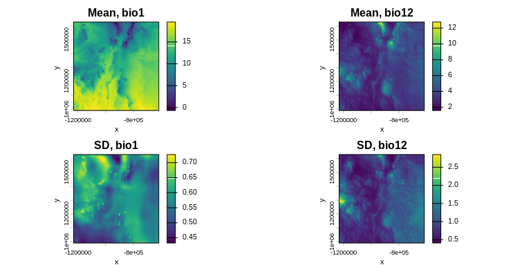
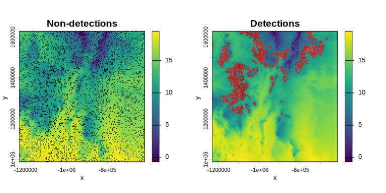
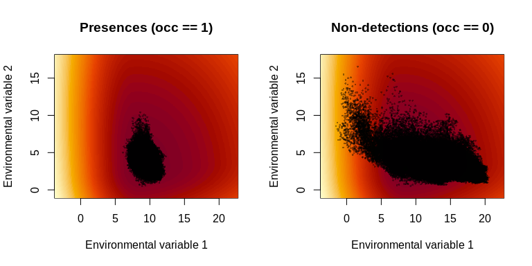
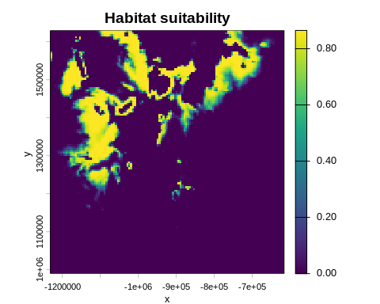

xsdm is an R package that integrates concepts of stochastic demography into species distribution modelling (SDM). Instead of treating environmental conditions as a static snapshot, xsdm uses multi-year environmental time-series together with species presence/absence records to:
- Reconstruct a species’ fundamental ecological niche via maximum-likelihood estimation.
- Account for inter-annual climate variability when estimating niche breadth and position.
- Project the species’ potential geographic range under current or future climate scenarios.
The statistical underpinning is described in:
Berti, E., Robles Fernández, A.L., Rosenbaum, B., Peterson, T.A., Soberón, J., & Reuman, D.C. (2025). The impacts of climate variability on the niche concept and distributions of species. bioRxiv. https://doi.org/10.1101/2024.10.30.621023
Installation
CRAN
install.packages("xsdm")Full end-to-end workflow
1 · Load and prepare environmental time series
xsdm expects bioclimatic time-series rasters — one SpatRaster per variable with each layer representing one year (or time step). The built-in data cover southern New Mexico, USA, over 39 years (1980–2018) using CHELSA v2.1 bio1 (mean annual temperature) and bio12 (annual precipitation).
library(xsdm)
library(terra)
bio_1 <- terra::unwrap(example_1$bio01)
bio_1 <- bio_1 / 100
bio_12 <- terra::unwrap(example_1$bio12)
bio_12 <- bio_12 / 100Take a look at the temporal means and standard deviations of the environmental variables:
m_bio_1 <- terra::app(bio_1, mean)
m_bio_12 <- terra::app(bio_12, mean)
sd_bio_1 <- terra::app(bio_1, sd)
sd_bio_12 <- terra::app(bio_12, sd)
par(mfrow = c(2, 2), mar = c(3, 3, 2, 4))
terra::plot(m_bio_1, main = "Mean, bio1", xlab = "x", ylab = "y")
terra::plot(m_bio_12, main = "Mean, bio12", xlab = "x", ylab = "y")
terra::plot(sd_bio_1, main = "SD, bio1", xlab = "x", ylab = "y")
terra::plot(sd_bio_12, main = "SD, bio12", xlab = "x", ylab = "y")
2 · Species occurrence data
Load the occurrence data and visualize detections and non-detections on top of the mean temperature map:
d <- example_1$occ_df
pts_0 <- terra::vect(d[d$presence == 0, ], geom = c("lon", "lat"),
crs = terra::crs(m_bio_1))
pts_1 <- terra::vect(d[d$presence == 1, ], geom = c("lon", "lat"),
crs = terra::crs(m_bio_1))
par(mfrow = c(1, 2), mar = c(3, 3, 2, 4))
terra::plot(m_bio_1, main = "Non-detections", xlab = "x", ylab = "y")
terra::plot(pts_0, add = TRUE, col = "black", pch = 20, cex = 0.2)
terra::plot(m_bio_1, main = "Detections", xlab = "x", ylab = "y")
terra::plot(pts_1, add = TRUE, col = "red", pch = 20, cex = 0.2)
3 · Build the environmental data array
env_data_array() extracts and stacks environmental values at the locations given in a presence/absence data frame, returning a 3-D array (locations × time × variables).
env_data <- list(bio_1 = bio_1, bio_12 = bio_12)
env_dat <- env_data_array(env_data, occ = d)
dim(env_dat)
#> [1] 4000 39 2
occ <- d$presence4 · Fit the model
optimize_likelihood() runs multiple optimizations from Latin-hypercube starting points and returns every solution sorted by decreasing log-likelihood:
result <- optimize_likelihood(
env_dat = env_dat,
occ = occ,
num_starts = 20L,
parallel = FALSE,
verbose = FALSE
)
head(result$solutions[, c("start_id", "loglik", "convergence")])
#> start_id loglik convergence
#> 1 11 -1042.503 4
#> 2 5 -1042.503 4
#> 3 18 -1042.503 4
#> 4 16 -1042.503 4
#> 5 17 -1042.503 4
#> 6 2 -1042.503 4
result$best$loglik
#> [1] -1042.5035 · Interpret the fitted parameters
Convert the best math-scale parameter vector to the biologically interpretable scale and plot the inferred log growth–environment function:
best_bio <- math_to_bio(result$best$par)
par(mfrow = c(1, 2))
interpret_parameters(
best_bio,
plot_indices = c(1, 2),
env_dat = env_dat,
occ = occ
)
6 · Habitat suitability map
Use the fitted parameters to project a habitat suitability map over the full raster extent:
hab_suit <- habitat_suitability(
param_list = best_bio,
env_list = env_data
)
terra::plot(hab_suit, main = "Habitat suitability", xlab = "x", ylab = "y")
Key functions
| Function | Purpose |
|---|---|
env_data_array() |
Build a (locations × time × variables) array from raster time series and an occurrence table |
optimize_likelihood() |
Multi-start MLE fitting; returns solutions sorted by log-likelihood |
loglik_math() |
Evaluate the log-likelihood at any math-scale parameter vector |
math_to_bio() |
Convert math-scale vector → biological-scale parameter list |
bio_to_math() |
Convert biological-scale parameter list → math-scale vector |
start_parms() |
Generate Latin-hypercube starting points from presence-only data |
profile_likelihood() |
Profile one parameter while re-optimising over the rest |
habitat_suitability() |
Produce a spatial probability-of-detection map |
interpret_parameters() |
Diagnostic plots of the niche shape |
dist_between_params() |
Distance between two parameter sets (Hungarian algorithm, equivalence-class aware) |
For developers and contributors
Install from source
# Clone the repository and install locally
install.packages("devtools")
devtools::install_github("xsdm-project/xsdm-devel")Reporting issues
Please file bugs and feature requests on the GitHub issue tracker. When reporting a bug, include the output of sessionInfo() and a minimal reproducible example.
Citation
If you use xsdm in published work, please cite:
Berti, E., Robles Fernández, A.L., Rosenbaum, B., Peterson, T.A.,
Soberón, J., & Reuman, D.C. (2025). The impacts of climate variability
on the niche concept and distributions of species. bioRxiv.
https://doi.org/10.1101/2024.10.30.621023BibTeX:
@article{bertiXSDM1,
title = {The impacts of climate variability on the niche concept and
distributions of species},
author = {Berti, E. and Fern\'{a}ndez, ALR and Rosenbaum, B and
Peterson, TA and Sober\'{o}n, J and Reuman, DC},
journal = {bioRxiv},
doi = {10.1101/2024.10.30.621023},
year = {2025},
url = {https://doi.org/10.1101/2024.10.30.621023}
}License
xsdm is released under the GNU Affero General Public License v3 or later.